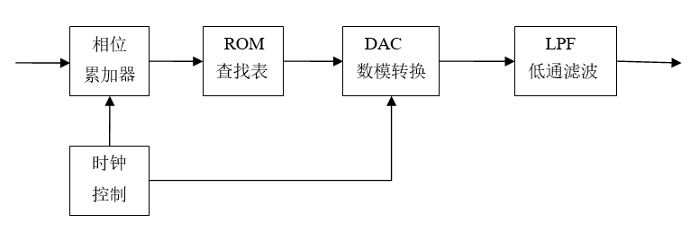
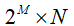
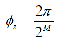
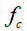
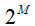
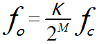

DDS Principle
DDS (Direct Digital Synthesis) technology is a method that, based on the Nyquist sampling theorem and digital processing technology, performs undistorted sampling of a series of analog signals, stores the obtained digital signals in memory, and, under the control of a clock, converts the digital quantities into analog signals through digital-to-analog conversion.
The DDS module mainly consists of a phase accumulator, lookup table, DAC converter, and low-pass filter. The basic structure is as follows.

The phase accumulator is the core component of DDS, used to implement phase accumulation and output the corresponding amplitude. The phase accumulator consists of aMbit-width adder and aMbit-width register. Under clock control, the previous accumulation result is fed back to the adder input to implement the accumulation function, so that the phase increment in each clock cycle isK, and the phase accumulation result is used as an address output to the ROM lookup table section.
The amplitude lookup table stores the binary digital amplitude corresponding to each phase. In each clock cycle, the lookup table addresses the phase address information output by the phase accumulator, and then outputs the corresponding discrete binary amplitude digital value. Assume the lookup table address isMbits, and the output data isNbits, then the capacity of the lookup table is

. It is easy to see that the phase resolution of the output signal is:
The DAC converter converts digital signals into analog signals. In fact, the signal output by the DAC is not continuous. Instead, according to the weight of each code bit, it sums the digital value of each input bit, and then performs analog output in units of its resolution. The actual output signal is a step-like analog linear signal, so it needs to be smoothed, which is generally done using a filter.
Low-pass filter: since the analog signal output by the DAC converter has step-like defects, it needs to be smoothed to filter out most of the spurious signals, making the output signal a relatively ideal analog signal.
When DDS is working, the frequency control wordK 与 Mis added to the phase accumulator of the corresponding bit width, and the result is used as the phase value. In each clock cycle, it is sent to the ROM lookup table in binary form, converting the phase information into a digitized sinusoidal amplitude value, which is then converted into a step-shaped analog signal through digital-to-analog conversion. After the signal passes through system filtering to remove most of the spurious signals, a relatively pure sine wave can be obtained.
From the perspective of frequency decomposition, the ROM lookup table divides the input frequency

into
parts. The number of parts occupied by the output frequency is exactly the step frequency control wordK. Therefore, the DDS output frequency can be expressed as:
is exactly the step frequency control wordK. Therefore, the DDS output frequency can be expressed as:

From the phase perspective, within time the phase increment of the output controlled by the frequency control wordKis:
the phase increment of the output controlled by the frequency control wordKis:

Considering the angular velocity of the output frequency at this time , within time
, within time the phase increment of the output frequency can also be expressed as:
the phase increment of the output frequency can also be expressed as:

From the above two equations, the relationship between the DDS output frequency and the input frequency can also be derived.
DDS Design
Design Description
In the following, only the DDS circuit before the DAC is designed.
The designed DDS has the following features:
- 1) Controllable frequency;
- 2) Controllable starting phase;
- 3) Controllable amplitude;
- 4) Selectable output of sine wave, triangle wave, and square wave;
- 5) Resource optimization: the waveform storage file only uses one-quarter of the sine wave data.
Generating ROM
For the ROM module, it is best to use a customized IP core, as both timing and area will be better optimized. A customized ROM also requires specifying a data file. For example, the suffix of the ROM data file in ISE is.coe, and the suffix of the ROM data file in Quartus II is.mif。
For the convenience of simulation, the ROM module is written in code here, with an address width of 8 bits and a data width of 10 bits.
To save space, only one-quarter of the sine waveform is stored, and then it is shifted according to symmetry to obtain a complete period of the sine wave data waveform.
To achieve diverse DDS modes, ROM programs for the triangle wave and square wave are also added.
The implementation code is as follows (all included in the file mem.v).
Example
input clk, //reference clock
input rstn , //resetn, low effective
input en , //start to generating waves
input [1:0] sel , //waves selection
input [7:0] addr ,
output dout_en ,
output [9:0] dout); //data out, 10bit width
//data out fROM ROMs
wire [9:0] q_tri ;
wire [9:0] q_square ;
wire [9:0] q_cos ;
//ROM addr
reg [1:0] en_r ;
always @(posedge clk or negedge rstn) begin
if (!rstn) begin
en_r <= 2'b0 ;
end
else begin
en_r <= {en_r[0], en} ; //delay one cycle for en
end
end
assign dout = en_r[1] ? (q_tri | q_square | q_cos) : 10'b0 ;
assign dout_en = en_r[1] ;
//ROM instiation
cos_ROM u_cos_ROM (
.clk (clk),
.en (en_r[0] & (sel == 2'b0)), //sel = 0, cos wave
.addr (addr[7:0]),
.q (q_cos[9:0]));
square_ROM u_square_ROM (
.clk (clk),
.en (en_r[0] & sel == 2'b01), //sel = 1, square wave
.addr (addr[7:0]),
.q (q_square[9:0]));
tri_ROM u_tri_ROM (
.clk (clk),
.en (en_r[0] & sel == 2'b10), //sel = 2, triangle wave
.addr (addr[7:0]),
.q (q_tri[9:0]));
endmodule
//square waves ROM
module square_ROM (
input clk,
input en,
input [7:0] addr,
output reg [9:0] q);
//1 in first half cycle, and 0 in second half cycle
always @(posedge clk) begin
if (en) begin
q <= { 10{(addr < 128)} };
end
else begin
q <= 'b0 ;
end
end
endmodule
//triangle waves ROM
module tri_ROM (
input clk,
input en,
input [7:0] addr,
output reg [9:0] q);
//rising edge, addr -> 0x0, 0x3f
always @(posedge clk) begin
if (en) begin
if (addr < 128) begin
q <= {addr[6:0], 3'b0}; //rising edge
end
else begin //falling edge
q <= 10'h3ff - {addr[6:0], 3'b0} ;
end
end
else begin
q <= 'b0 ;
end
end
endmodule
//Better use mem ip.
//This format is easy for simulation
module cos_ROM (
input clk,
input en,
input [7:0] addr,
output reg [9:0] q);
wire [8:0] ROM_t [0 : 64] ;
//as the symmetry of cos function, just store 1/4 data of one cycle
assign ROM_t[0:64] = {
511, 510, 510, 509, 508, 507, 505, 503,
501, 498, 495, 492, 488, 485, 481, 476,
472, 467, 461, 456, 450, 444, 438, 431,
424, 417, 410, 402, 395, 386, 378, 370,
361, 352, 343, 333, 324, 314, 304, 294,
283, 273, 262, 251, 240, 229, 218, 207,
195, 183, 172, 160, 148, 136, 124, 111,
99 , 87 , 74 , 62 , 50 , 37 , 25 , 12 ,
0 } ;
always @(posedge clk) begin
if (en) begin
if (addr[7:6] == 2'b00 ) begin //quadrant 1, addr[0, 63]
q <= ROM_t[addr[5:0]] + 10'd512 ; //shift up
end
else if (addr[7:6] == 2'b01 ) begin //2nd, addr[64, 127]
q <= 10'd512 - ROM_t[64-addr[5:0]] ; //flip twice
end
else if (addr[7:6] == 2'b10 ) begin //3rd, addr[128, 192]
q <= 10'd512 - ROM_t[addr[5:0]]; //flip and shift right
end
else begin //4th quadrant, addr [193, 256]
q <= 10'd512 + ROM_t[64-addr[5:0]]; //flip and shift up
end
end
else begin
q <= 'b0 ;
end
end
endmodule
DDS Control Module
Example
input clk, //reference clock
input rstn , //resetn, low effective
input wave_en , //start to generating waves
input [1:0] wave_sel , //waves selection
input [1:0] wave_amp , //waves amplitude control
input [7:0] phase_init, //initial phase
input [7:0] f_word , //frequency control word
output [9:0] dout, //data out, 10bit width
output dout_en);
//phase acculator
reg [7:0] phase_acc_r ;
always @(posedge clk or negedge rstn) begin
if (!rstn) begin
phase_acc_r <= 'b0 ;
end
else if (wave_en) begin
phase_acc_r <= phase_acc_r + f_word ;
end
else begin
phase_acc_r <= 'b0 ;
end
end
//ROM addr
reg [7:0] mem_addr_r ;
always @(posedge clk or negedge rstn) begin
if (!rstn) begin
mem_addr_r <= 'b0 ;
end
else if (wave_en) begin
mem_addr_r <= phase_acc_r + phase_init ;
end
else begin
mem_addr_r <= 'b0 ;
end
end
//ROM instiation
wire [9:0] dout_temp ;
mem u_mem_wave(
.clk (clk), //reference clock
.rstn (rstn), //resetn, low effective
.en (wave_en), //start to generating waves
.sel (wave_sel[1:0]), //waves selection
.addr (mem_addr_r[7:0]),
.dout_en (dout_en),
.dout (dout_temp[9:0])); //data out, 10bit width
//amplitude
//0 -> dout/1 //1 -> dout/2 //2 -> dout/4 //3 -> dout/8
assign dout = dout_temp >> wave_amp ;
endmodule
testbench
Example
module test ;
reg clk ;
reg rstn ;
reg wave_en ;
reg [1:0] wave_sel ;
reg [1:0] wave_amp ;
reg [7:0] phase_init ;
reg [7:0] f_word ;
wire [9:0] dout ;
wire dout_en ;
//(1)clk, reset and other constant regs
initial begin
clk = 1'b0 ;
rstn = 1'b0 ;
#100 ;
rstn = 1'b1 ;
#10 ;
forever begin
#5 ; clk = ~clk ; //system clock, 100MHz
end
end
//(2)signal setup ;
parameter clk_freq = 100000000 ; //100MHz
integer freq_dst = 2000000 ; //2MHz
integer phase_coe = 2; //1/4 cycle, that is pi/2
initial begin
wave_en = 1'b0 ;
//(a)cos wave, pi/2 phase
wave_amp = 2'd1 ;
wave_sel = 2'd0 ;
phase_init = 256/phase_coe ; //pi/8 initialing-phase
f_word = (1<<8) * freq_dst / clk_freq; //get the frequency control word
#500 ;
@ (negedge clk) ;
wave_en = 1'b1 ; //start generating waves
# 2000 ;
//(b)triangle wave, pi/4 initialing-phase
wave_en = 1'b0 ;
wave_sel = 2'd2 ;
phase_init = 256/4 ;
wave_amp = 2'd2 ;
# 50 ;
wave_en = 1'b1 ;
end
//(3) module instantiaion
dds u_dds(
.clk (clk),
.rstn (rstn),
.wave_en (wave_en),
.wave_sel (wave_sel[1:0]),
.wave_amp (wave_amp[1:0]),
.phase_init (phase_init[7:0]),
.f_word (f_word[7:0]),
.dout (dout[9:0]),
.dout_en (dout_en));
//(4) finish the simulation
always begin
#100;
if ($time >= 100000) $finish ;
end
endmodule
Simulation Results
As shown in the figure below, the output signal is adjusted to analog display.
- 1) It can be seen that the sine wave frequency is 2 MHz, corresponding to the frequency control word;
- 2) The initial phase of the sine wave is 1/2 period, and the initial phase of the triangle wave is 1/4 period, consistent with the settings;
- 3) The triangle wave is assigned half the amplitude of the sine wave, and the amplitude is also controllable;
- 4) The output waveforms are the sine wave and triangle wave, and they can be switched normally;
- 5) The sine wave waveform has no abnormalities; only 1/4 period of sine wave data is used to complete the full sine wave output.
Due to space limitations, the simulation only tested some features. Readers can modify the parameters to test other features, such as other frequencies, square wave output, etc.

Appendix: Using Matlab
Generating 1/4 Period Sine Wave Data
The use of Matlab to generate 1/4 period sine wave data is described as follows, and the process of splicing the complete sine wave is also simulated.
Example
%=======================================================
% generating 1/4 cos wave data with txt hex format
%=======================================================
N = 64 ; %共256data points, take1/4
n = 0:N ;
w = n/N *pi/2 ; %Quantize to pi/2内
st = (2^10 /2 -1)*cos(w) ; %Sine wave data takes 10 bits
st = floor(st) ;
%%Splice the first quadrant
st1 = st+512 ;
figure(5) ;plot(n, st1) ;
hold on ;
%%Splice the second quadrant
n2 = 64 + n ;
st2 = 512 - st(64-n+1);
plot(n2, st2);
hold on
%%Splice the third quadrant
n3 = 128 + n ;
st3 = 512 - st ;
plot(n3, st3) ;
hold on ;
%%Splice the fourth quadrant
n4 = 192 + n ;
st4 = 512 + st(64-n+1) ;
plot(n4, st4) ;
hold on ;
Click to share notes
<p style="font-size:14px;">The note must be an extension of the content of this article!</p><br> <p style="font-size:12px;"><a href="../tougao.html" target="_blank">To submit an article, click here</a></p> <p style="font-size:14px;"><a href="./runoob-user-test-intro.html" target="_blank">How to obtain a registration invitation code</a></p> <h3 class="text-muted"><i class="fa fa-info-circle" aria-hidden="true"></i> You must <a href=".." class="runoob-pop">log in</a> before sharing notes!</h3> <p><a href="./runoob-user-test-intro.html" target="_blank">How to obtain a registration invitation code</a></p>